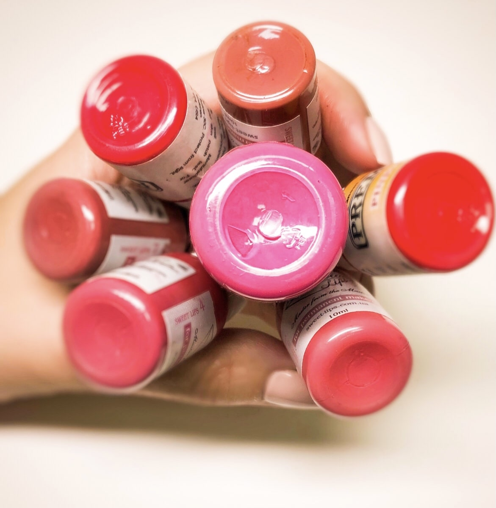
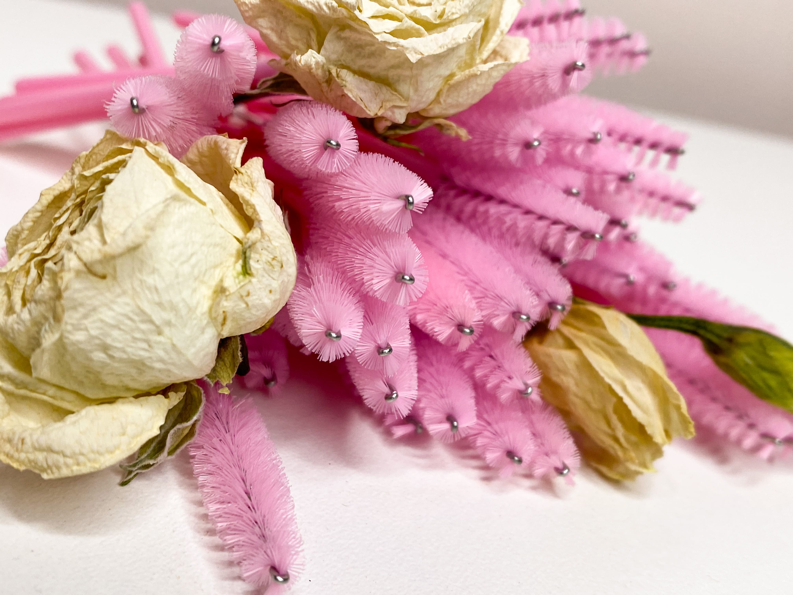

Догляд за бровами після процедури ПМ
- 1-4 день після процедури промакати ватним диском, змоченим в хлоргекседині, розведеним 1: 1 з водою - 2-3 рази на день, потім просушити серветкою. ⠀
- 5-10 день те ж саме, тільки раз в день. ⠀
- У разі сильного стягування шкіри - нанести на палець краплину мазі «Етоній», розігріти пальцями, обережно нанести на брови, просушити серветкою! Обов'язково просто просушити, не витирати, щоб не здерти кірочки!
- Кірочки не здирати!
Категорично забороняється!
- Під час загоєння шкіри (2 тижні) відвідувати косметолога. ⠀ ⠀
- Піддавати брови прямому впливу сонця (солярію) близько 2 тижнів.
- Наносити що-небудь на брови: тональний, оглядовий крем, олівець, тіні та інше. ⠀ ⠀
- Тримати брови у волозі тривалий час.
- Піддавати брови будь-якому механічному впливу.
- Фарбувати брови фарбою / хною 2 тижні після процедури.
- Здирати кірочки.


Догляд за губами після ПМ.
Загоєння губ після ПМ триває приблизно 5-8 днів тому перші дні необхідний певний догляд:
- 1-4 день протираємо губи хлоргексидином 3 рази в день.
- Перші днів 5 по мірі необхідності наносимо тонким шаром мазь етоній, надлишки видаляємо. Не можна наносити велику кількість мазі, щоб шкіра не сильно розм'якшувалася і не виводила пігмент.
- Перші кілька днів не п'ємо гаряче, (тільки через трубочку).
- Перший місяць не скрабуємо губи, не відвідуємо солярій, лазню, сауну.
- Зону перманенту НЕ чесати, щоб не здирати кірочки.
Догляд за повіками після ПМ.
- Перші три дня рекомендую протирати зону хлоргексидином два рази в день
- З другого дня при необхідності наносити мазь Етоній тонким шаром, при сухості, не більше 2 разів на день.
- При появі сильного набряку випити сечогінний препарат, можна нанести «кортізоновая мазь», набряк проходить через 1-3 доби.
- Неможна фарбувати вії до повного загоєння (5-10 днів), відвідувати сауни, басейни, солярії, будь-які водойми.
- Зону перманенту НЕ чесати, щоб не здирати кірочки.
Догляд за віями після процедури нарощення.
- Протягом перших 24 годин уникайте контакту з водою (не вмивайтеся) це впливає на полімеризацію частинок клею, що спричинить собою відшарування штучних вій від рідних.
- Протягом перших 48 годин не відвідуйте лазню, солярій, також не варто проводити ніяких процедур, пов'язаних з високою вологістю і температурою.
- 1-2 рази на день акуратно розчісуйте вії спеціальною щіточкою, відступаючи від кореня вій 2-4 мм, але тільки коли вії сухі.
- Уникайте потрапляння на вії засобів на масляній основі.
- Умиватися з нарощеними віями обов'язково: у напрямку їх росту.
- Не можна терти руками або хусткою очі, іншими словами, не піддавайте вії зайвої механічної дії.
- Бажано не фарбувати вії тушшю (це теж механічний вплив, зменшує термін носіння).
